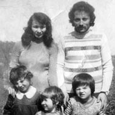
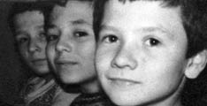

“Ben Herkesin Ailesi Cezaevinde Sanıyordum.”
Serkan Tahmaz4
12 Eylül döneminde annem Hatice Tahmaz ve babam Mehmet Tahmaz yaklaşık 24 ay cezaevinde yattılar. İkisi de Giresun’da TÖB-DER’li öğretmenlerdi. Dev-Yol davasında 168/1. maddeden örgüt yöneticisi olmak suçuyla yargılandılar. Babam dava sonucunda beraat etti, annemin cezasıysa 8 yıldan 3 yıla indi ve zaman aşımından düştü.
Üç erkek kardeşiz, ben ortanca çocuklarıyım.
Çocuk Serkan’ın gözüyle bakarsak; anne, babası öğretmen olan, güzel kıyafetler giyen, istediği zaman top alabilen çocuklardık. Son derece keyifli, mutlu bir ailemiz vardı. Bizim yaşımız küçüktü ama bir şekilde politize olmuştuk.
TÖB-DER’e giderdik, TÖD-DER’de ne olurdu, öğretmenler oradaydı. Hep ülkeyle ilgili konuşulurdu, gelecekle ilgili şeyler tartışılırdı. Biz de duyardık onları o çocuk halimizle, benzer şeyler konuşurduk. Sokakta pullama yapar, kapılara yazılar yazardık.
12 Eylül tam bir yıkımdı bizim için. Bir anda kesintiye uğrayan bir mutluluk, bir yuvanın dağılmasıdır yaşadıklarımız.
Önce ev baskınları başladı. Evimiz Giresun Kayadibi’ndeydi. Biz o dönemde 4, 6 ve 8 yaşında 3 kardeş, fındık bahçesinde oturup beklerdik. Polisler silahlarla sürünerek geçerdi yanımızdan, biz de oturur onların geçmesini beklerdik. Geçerlerdi, girerlerdi, ne yapacaklarsa yaparlardı bizim eve. Bazen soru sorarlardı, olmazsa bize öcü gibi bakıp giderlerdi. Babam bir ara gözaltında kaldı, cezaevine girdi. O cezaevindeyken biz devam ettik yaşamımıza. Hatta sünnet olduk, o ara. Cezaevinde babamı ziyarete gittik. Bir tarafta tutuklular, bir tarafta ziyaretçiler, ortada jandarmalar var. Babam orada Barış’la konuşuyor. Barış dedi ki “Sünnet olduk baba.” Babam, inanmıyorum dedi, Barış da herkesin içinde indirdi pantolonunu, “Baba bak olduk” diye gösterdi. Orada herkesin bir anda durduğunu hatırlıyorum. Çünkü orası zaten saçma sapan bir yer, saçma sapan bir durum, herkes de onun bir şekilde farkında ama Barış’ın yaptığı bir anlamda gerçek hayattı, o tuhaf mekân içinde bir kırılmaydı. O yüzden bir an için herkesin gözlerinin, bakışlarının değiştiğini fark etmiştim.
Bu baskınlardan sonra, bir gün polisler evde kimse yokken kapıyı kırmış, girmiş içeriye. O kapı kırılmasından sonra bizim hayatımız tamamen değişti.
Annem ve Babam Kaçıyor

Hatice ve Mehmet Tahmaz
çocukları Hüseyin, Barış ve Serkan
ile birlikte
12 Eylül oldu, babam ve annem de aranıyorlar, ikisi de kaçmışlar. Evimiz tamamen dağıldı, eşyalarımız dedemlerin olduğu yere götürüldü. Nevzat ağabey ve Ali ağabey eşyaları taşıdılar. Babamdan ve annemden haber alamıyoruz. Onlardan tamamen ayrı bir yaşam başladı bizim için. Yaşlı dede ve nineyle beraber kalmaya başladık. Görele ilçesinde Çavuşlu İlkokulu’na yazdırdılar bizi. Ondan sonra annem ve babam dönem dönem geldiler. Çavuşlu’da bir ev oluşturuldu. Fakat 1982’de bir daha alındılar içeriye ikisi beraber. Biz çocuklar ne zaman bu iş bitecek, ne zaman dönerler, ne zaman hayatımıza devam ederiz gibi şeyler konuşuyorduk. Çok zor oldu üçümüz için.
Annem ve babam beraber geldiler, yine bir ev, yeni bir hayat kuruldu Giresun’da. Umudumuz olmasa da sanki yeniden eski zamanlara dönüyormuş gibiydik ama her şey bir kez daha son buldu. Yine gözaltına alındılar, yine gittiler, biz üçümüz yine köy evinde yaşlı dedeyle kaldık. Annem bir daha serbest bırakıldı, köye geldi. Fındık topluyoruz köyde. Arkadaşları da var. Evi bastı jandarmalar. Bir operasyon başladı bizim evde, annemi gözaltına alacaklar, diğerlerinin de orada olduğunu anlayınca daha da büyüdü iş. Bizim fındık bahçesi bile kuşatıldı. Biz üç çocuk diğer ağabeylere, haber verdik onlara siz gidin, dedik. O kadar politiktik yani, onların yakalanmaması gerektiğini biliyorduk. Sonra dönerken elimize odunları aldık, sanki odundan geliyormuşuz, operasyondan haberimiz yokmuş gibi. Biliyoruz ki annemi götürecekler. Ama şunu da biliyoruz ki, içeride işkence yapıyorlar annemize, babamıza. Çünkü babama işkence yapıldığını daha önce görmüştük. Ziyarete gitmiştik karakola, babam yürüyemiyordu. İki polisin arasında sürünerek geldi yanımıza. Şimdi düşünüyorum da, o polis insan olsa, o üç çocuğun karşısına babalarını o şekilde getirmez. Adam sürünüyor, yüz göz de dağılmış, ayaklar şişmiş zaten, 46 numara olmuş. Getirdiler sürükleyerek, bizi görünce babam ayağa kalkıp yürümeye çalıştı, çocuklar beni böyle görmesin diye. Çok rezil bir durum. Ev basıldı, annem götürülecek, biz de biliyoruz ki çocuklarıyla giderse anne az işkence görüyor. Birimiz gidecek ama kim gidecek, çok küçük değiliz, büyüğüz, bizi almazlar, ama işte denesek mi diye konuşurken, ben annemin eline sarıldım tam götürürlerken, polise annemi vermiyorum güya. Polis beni çekiyor, itmeye çalışıyor, bıraktırmaya çalışıyor, annem, oğlum yapma diyor. Annem dediği halde ben de biliyorum ki çok ciddi şeyler olacak, polis silahla beni korkutmaya kalktı, silah gösterdi bana o anda. “Babamı götürdünüz getirmediniz, annemi de getirmeyeceksiniz, bırakmam” diye feryat figan ediyorum.
Aile böyle dağılmış vaziyette, biz dedemle yaşıyoruz, bir yandan da okula gidiyoruz. Ben ilkokula, Hüseyin ağabeyim ortaokula başlamış, Barış da 1. sınıfta. Bir gün biz, Hüseyin’le okuldayken, Barış bize annemle babamın Çavuşlu’dan geçtiğini söyledi. Keşap’taki cezaevinden, Trabzon’a nakledilirken, araç orada durmuş. İçinde de annemle babam var. Barış da ayağında yırtık ayakkabı, orada. Şimdi baba olunca daha iyi anlıyorum annemle babamın o an neler hissettiğini. Aracın deliklerinden Barış’ı görünce para atmışlar, Barış da paraları alıyor ama kim olduğunu bilmiyor. Barış Barış diyorlar ama göremiyor tabii. Sonra araçtaki komutan anlıyor Barış’ın içeridekilerden birinin çocuğu olduğunu, açtırıyor kapıyı çocuklarını görsünler diye. Barış bir bakıyor ki eller kelepçeli, ayaklar zincirli. Bu şekilde görmüş oluyor annemleri. Bu benim için çok üzücü bir hikâyedir.
Trabzon Bahçecik Cezaevi’ne naklediliyorlar. Babaannem ve dedem çok yaşlı oldukları için, anneannem gidiyor her hafta, bizi de götürüyor. Görüşe giriyoruz ama annemle aramızda bir cam var, arada en az yarım metreye yakın bir boşluk var, sonra tekrar bir cam var. Zaten 3-5 dakika ve yalnızca telefonla görüşebiliyoruz. İçeriden çıkan bir ağabey bize dedi ki cezaevinin giriş kapısının yan tarafında, yuvarlak küçük delikli, kocaman bir sac var, içeridekiler oradan sizi görüyorlar. Biz üçümüz o sacın görüş açısında oyunlar oynuyoruz, top oynuyoruz. Neşeli görünmeye çalışıyoruz. Çünkü içeridekilere moral vermek gerekiyor. Orada kavga etsek bile “Hüseyin hemen sus, annem, babam bakıyor, görüyor” diyoruz. Moral vermeye çalışıyoruz oradan.
Bir gün içeriden haber geldi, oradaki kadın gardiyanlardan bir tanesi, annemlerle tanışmış bir şekilde, üçümüzden birisini içeri götürecek. Ben seçildim niyeyse, oysa ya küçükten başlanır ya büyükten, o anki şans bana güldü. İşte kadın zeytinyağı, pirinç gibi şeyler aldı, bir poşet de bana verdi. Ben de rol yaparak, onun yanında, onun çocuğuymuşum gibi elinden tutarak askerlerin arasından girdim içeriye. Kadınlar koğuşuna girdim ki içeride pasta var. Herkes bana sarılıyor, kiminin çocuğuna hasreti var, kiminin kardeşine, herkes sarılıp hasretini gideriyor. O sacın iç tarafını gördüm. Merdiven gibiymiş ve gerçekten herkes orada durup yakınlarını izliyormuş. O sactan baktığımda da Barış ve Hüseyin rollerine devam ediyorlardı bu arada. Biliyorum oysa ben neler çektiklerini.
Geçen sene bir haber için gittim Trabzon’a. O zaman cesaret edebildim, 30 seneden sonra ilk defa gidebildim. Buldum aşağı

Soldan: Barış, Hüseyin, Serkan Tahmaz
yukarı geçtiğimiz yerleri, çevresini ama tabii benim hatırladığım gibi değil. Bir kere küçüğüm o zaman, onun da etkisi var. Bir de bizim o sac kaybolmuş. Paslandı belki de. Çok değişik duygular içindeydim orayı gördüğümde.
Kardeşler Ayrılıyor
Hüseyin, Samsun Anadolu Lisesi’ni kazandı. O zaman çok zordu kazanmak, kazandın mı geleceğin garanti aslında. O süreçte kimse ilgilenmediği için Hüseyin gidemedi oraya, hakkı yanmış oldu. Ben de girmez olaydım sınava, parasız yatılıyı kazandım. Gitmek istemediğim halde beni zorla gönderdiler. Okul Konya Karaman’da. Benim hiç bilmediğim bir iklim, yer. Ayrıldım evden. Daha da kötü oldu tek başıma gitmek. Anne babadan ayrıydık ama üçümüz birbirimize kenetlenerek bir şekilde devam ediyorduk. Ayrılmak zorundasın, bir şey de diyemiyorsun. Amcamların bir otobüsü vardı, en arkada da yatak gibi bir yer vardı. Çocuğa koltuk alamayacaklarına göre bana dediler ki sen burada gideceksin. O arka yatağa yatırdılar beni, perde var, perdeyi açtım otobüs hareket ettiğinde, bir baktım ki Hüseyin’le Barış koşuyor ağlayarak, ben de ağladım orada otobüsün arkasında. O sahne film sahnesi gibidir. Çok acı bir şey. Otobüs ayrıldı oradan, uzaklaştık, ben kardeşlerimden ayrılıyorum bir yandan, bir yandan da bilmediğim bir yere gidiyorum.
Konya’ya vardık, amcam beni okula yerleştirdi. Parasız yatılı ama yine de para lazım, okul yemeğini veriyor, arada bir takım elbise veriyor ama başka bir şey yok. Kitap, defter aldı amcam ama resim defteri gerekiyor mesela, o yok. Para yok, nasıl isteyeyim onlardan.
Treni ilk defa Konya’da gördüm, Karadeniz’de yok. Çok büyük, kocaman tekerleri var. Çok gürültülü bir de. Çocuk Serkan çok korkuyor ondan ama o trenin tekerleklerinin arasına girmek zorundayım ben. Çünkü şeker pancarı atarak para kazanıyorum. Traktör römorku ile tarladan gelen şeker pancarını, şeker fabrikasına gitmek üzere trenin römorkuna atıyoruz. O işten kazandığımız parayı biriktirip öğretmenden dayak yememek için resim defteri alıyoruz. Orada çalışıyorum ama atarken o kadar dikkat ettiğim halde trenin altına kaçıyor pancarlar, alta kaçanları almak zorundayım, çocuk halimle orada, kimse düşünmez, hareket etse ezildin gittin. Çok korkuyordum ama mecbur işte, çalışmak zorundasın.
Konya’da çok kar yağıyor, öyle soğuk ki... Ama benim bir ceket, bir kazak ve ayakkabıdan başka hiçbir şeyim yok. Bir gün ayakkabım yırtıldı, zaten yazlık ayakkabıyla gitmiştim. Okula gidecek ayakkabım yok. Arkadaşlardan, çocuklardan yalvar yakar, kullanmadıkları ayakkabıyı isterdim. Yani arkadaşım o gün giyiyor ya, giymediğini giyip okula gidiyordum. Öyle zordu ki! Bir gün İsmail ağabey diye birisi geldi, annemlerin birlikte yattıkları bir kadının kayınbiraderiymiş, götürdü beni bir çift ayakkabı aldı, o ayakkabıyı hâlâ unutmam.
Dayım MHP’li bir subaydı. Annemler’le de kavgalılardı. Annem cezaevine düştüğünde, yoğun işkence gördü, cezaevi komutanı da anneme direkt işkence yapanlardan birisiydi. Dayım annemin cezaevinde olduğunu duyunca karakola geliyor. Karakoldaki komutan da arkadaşı “Ablamız bizim, tabii ki sahip çıkacağız” diyor. Ama annem durumu dayıma söyleyince dayım adamı dövüyor herkesin içinde. Ondan sonra dayımlarla bir yakınlaşma başladı. Mektup yazmış annem, Serkan’ın ayakkabıya ihtiyacı var diye. Dayım bana bir çuval asker çorabı, ki çektiğim zaman dizlerimin üstüne geliyor, bir tane asker botu gönderdi. Özel yaptırmış ama benim ayağım 37, bot 41 falan. O da giyilmiyor.
Bu arada annemden ve babamdan mektuplar geliyor. Ben bu mektupları saklıyorum. Tutuklu mektubu, görülmüştür damgası var ya o görülmesin diye ben hep erken alıp, kimse görmeden okuyorum. Çünkü o yatılı okula girene kadar ben herkesin ailesinin cezaevinde olduğunu düşünüyordum, herkesin ailesi cezaevinde, herkes işkence görmüş, herkes bu durumda... Bir gittim ki kimsenin ilgisi yok, bir tek ben böyleyim. Kendimi o kadar kötü ve yalnız hissettim ki... Çok sessiz biri değildim ama hep bildiğim, sakladığım, hayatımın önemli bir bölümü vardı ama arkadaşlarımla da iletişim kurduğum farklı şeyler vardı. Annemle babamı sorduklarında yuvarlak cevaplarla geçiştiriyordum. Çünkü “Herkes bizim gibi değil!”i fark ettikten sonra insan içine kapanıyor. Bir baktım benim yaşadığım olağanüstü bir durum ve benim dilimden konuşmuyor bu çocuklar. Onların başka bir dünyaları var. Ben başka bir dünyadan gelmişim oraya ama onlarla aynı yerde olmak zorundayım. Kocaman bir gerçeklik var. Ayrıca bu okula devam etmek zorundayım, yaşamımı devam ettirmek zorundayım, o defteri, o kitabı almak zorundayım. Onlarla boğuşmak belki de iyi oldu.
Sınıf arkadaşlarım arasında söylenti çıkmıştı, Serkan’ın babası hırsız mı, katil mi? Berbat bir şeydi. İki ağabey geldi, dediler ki bu mektuplar senin mi, benim dedim. “Nedir bu tutuklu mektupları, görülmüştür damgaları?” Ben de anlattım. Fakat bu çok kolay olmadı. Bizde tanımadığın ama sana yaklaşan biri mutlaka polistir tedirginliği de var. Onlar da liseden, o yatılı okulda okuyan devrimci ağabeylermiş. Benim ondan sonra hayatım dikine gitmeye başladı. Orada bir öğretmen vardı, onunla tanıştırdılar beni. Gerçi öğretmenin yaklaşımından da ürkmüştüm, çok büyük bir tedirginlik yaşamıştım. Sonra bir gün bir telgraf geldi annemlerden, çıktık yanına geliyoruz diye. Dünyalar benim oldu. Şimdi bile gözlerim dolar. Atladılar geldiler, annemle babam. Hemen o ağabeylerle tanıştılar. Nesrin Hoca’yla ve eşi de doktor Ramazan Amca ile de tanıştılar. Ramazan Amca da Mahir’lerin döneminde içeride kalmış, o sürecin insanı, eşi de öyle birisi. Çok iyi insanlardı, evlerine aldılar beni, ben hafta sonu onların evinde kalıyordum. Hatta üç çocuğunuz var, Serkan’ı biz alalım dediler. Normal bir yaşantımız olsaydı, o kadar iyi insanlardı ki belki onlarla kalmayı isterdim. Çünkü onların da çocuğu olmuyormuş, hemen bana bir oda yaptılar, Ramazan Amca İngilizce derslerine başladı, benim derslerim düzeldi. Bu süreçte Barış ve Hüseyin memleketteydi.
Annem ve Babam Çıkıyor
Karaman’da o yıl bitti. Annem ve babam cezaevinden çıkmışlardı zaten, kardeşlerimi alıp İstanbul’a gelmişler, ben de İstanbul’a geldim. Giresun’da o dönemin şartlarına göre güzel bir evimiz vardı. Televizyonu olan, buzdolabı olan, birçok şeyi olan bir ailenin İstanbul’a gelen eşyası küçücük bir odaya sığmış, bir çekyat, üç yorgan şeklinde bir şey kalmıştı sadece. Annemler çıkmışlar ama mesleklerine geri dönemiyorlar, öğretmenlik yok, maaş yok, hiçbir şey yok. İstanbul’dayız ve ailenin hiçbir geliri yok. Biz üç kardeş bunun da bilincindeyiz. İş bulmadan önce eşyaları bir odaya yerleştirdik ve amcalarda, diğer akrabalarda kaldık. Her gün otobüste kim nerede kalacak paylaşmaları yapılırdı. Çünkü ev yok, kalınacak yer yok. Akrabaların bol olduğu bir yer orası, bir sokak düşünün, babamın kardeşleri, amca oğulları, teyze oğulları, hepsi aynı yerde oturuyor. Her akşam hepimiz aynı yerde kalırsak insanlara yük olacağımız için bölüşülüyor, o orada, bu burada, şu şurada kalsın deniyor. Akşam sokakta toplanıyoruz, dağılıyoruz, sonra sabah tekrar buluşuyoruz.
Babam iş buldu, bir eve yerleşildi, yavaş yavaş her şey düzene giriyor, annem de iş bulacak, durumlar kötü ama en azından aynı evdeyiz. Hatta o derece kötü ki, evde yiyecek ekmek yok. Annemin akrabalara gidip köfte yapacağım bayat ekmek lazım deyip o bayat ekmeği bize buharda tutup yedirdiğini biliyorum. Öyle bir yokluk, öyle bir darboğaz. Durum bu da olsa o kadar ayrılığın ardından yine de bir aradayız diye mutluyuz.
Tam bu süreçte annemin tutuklu yargınlanacağı bir karar çıktı tekrar mahkemeden. Haydi bakalım bir kez daha kaçaklık durumu, her şey bir daha yıkılsın... Annem 2.5 sene kaçtı. Biz annemle İstanbul’un değişik yerlerinde bir araya geliyorduk. Çoğunu babam ayarlıyordu, taktikler veriyordu. Akrabalarda buluşuyorduk. Onlardan da fazla bir şey beklenmiyor çünkü baskı çok fazla, herkes korkuyor. Subay dayımda kaldı kısa bir dönem. Sonra teyzemlerin evine taşındık Şirinevler’de bir yere. Annemin kaçmasının sebebi de şu, dava Yargıtay’a gitti, dava Yargıtay’a gittiğinde sonuçlanacak. Çünkü daha önceden yattığına sayılacak, bu sonuçlanana kadar da cezaevinde boşuna yatmış olacak.
Bu dönemde babamın çalıştığı fabrikada amcamın kızı da çalışıyordu. Sivil polisler fabrikaya gidiyorlar, evi göster diye. Amcamın kızını da getiriyorlar. Sokağın başından yanında 5-6 tane sivil polisle geliyor. Hüseyin o kadar politik ki Behice’ye bakıyor, annem evde, alacaklar gelirlerse. Behice poşetle işaret veriyor. Hüseyin onu anlıyor ve geliyor anneme haber veriyor. Annem yan komşuya geçiyor, eve geliyorlar bulamayıp geri dönüyorlar.
Artık kaçacak derman kalmadığı için, 1986’ydı galiba, annem cezaevine girdi. 1986’yı şundan hatırlıyorum; Çernobil oldu. Çernobil yağmurları annem içerideyken üzerine yağdı. Bir yıl boşuna yatmış oldu.
Bu arada ev basılıyor sık sık. Babam ha bire Gayrettepe’de, yine baskı, yine dayak, işyerine gidip işten attırmaya çalışıyorlar, bu böyle böyle yaptı diye. Neyse ki Tadım Kuruyemiş fabrikasının sahipleri sahip çıktılar babama, kaldı orada. Bir şekilde bizi yok etmeye çalışıyorlar. Sen zaten bu ailenin her şeyini bölmüşsün, bitirmişsin, işkence yapmışsın, çocukları sokaklarda kalmış, kaç yıl geçmiş aradan ama hâlâ düşman. Bir de tekrar görev vermiyorlardı babama. Mesleği öğretmenlikti, başka bir mesleği de yok, öğretmenlik yapmayı istiyordu. Vekil öğretmenlik yaptı bir süre, sevdiği için. Bir öğretmenin dörtte bir maaşına çalıştı. Yazı geldi kendisine, öğretmenlik için gerekli özellikleriniz yoktur diye. Babam ilkokuldan sonra öğretmen olarak eğitilmiş bir insan, onun yok da kimin var?
İstanbul’a adapte olma süreci zor olmadı, bir anlamda dayatma oldu. Çünkü babamın kazandığı yetmiyor. Anne cezaevinde, biz üçümüz de çalışmaya başladık çocukken. Annem bizi çok güzel bir okula, Yeni Levent Lisesi’ne yazdırmıştı. O zamanlar başka bir semtteki okula gidemiyordunuz ama annem öğretmenim diye konuştu, yazdırdı bir şekilde. Okuyoruz ama dersler çok kötü tabii, üçümüzün 24 tane zayıfı vardı bir dönem. Ekonomik durumumuz kötü, okulda bir şey yemeyi bıraktık evde bile yiyecek bir şey yok. Su sattım ben, ayakkabı boyacılığı yaptım, bilet sattım, pazarcılık yaptım, oyuncak imalatında çalıştık. Benim İstanbul’da yapmadığım iş kalmadı okuyabilmek için. Çok zayıfımız geliyordu ama direndik biz de okumak için.
Bir dönem sülaleden de biraz hor görüldük, ötelendik çok başıboş kaldık diye. Karadeniz’de, “çocuklar çok başıboş kalınca uğursuz olur, it olur” derler. Aslında yaramaz çocuklar değildik. Serseri tavırlarımız da yoktu ama biraz da insanları vicdanları rahatsız eder, görmek istemezler ya bize baksalar, bizi görseler bir şeyler yapmaları gerekiyor o yüzden kendi çocuklarını da kenara çekerek, gitmeyin, işte onların annesi babası şöyle, dedikleri oldu. Çok erken büyümek zorunda kaldık. Hatırlıyorum, annemle babam gittikten sonra köyde bir mevlide gitmiştik. Çok fazla silah atılıyor. Bir jip, arkasından da bir kamyonet dolusu asker geldi. Biz de dedik ki herhalde ateş edildi ondan geldiler. Adamlar bize gelmiş, 3 tane çocuğa; yaşlarımız 6, 8, 10 herhalde. Komutanla yürüyoruz eve doğru. Amcam da bizimle geliyor. Komutan bir resim gösterdi, Hüseyin baktı resimlere, tanımıyorum dedi, bana verdi. Ben baktım, tanımıyorum dedim. Barış’a verdim. Barış bakmadan, tanımıyorum dedi, verdi. 6 yaşında. Komutan dedi ki “Eşşekoğlu eşşek, bak da söyle, niye bakmadan bilmiyorum diyorsun?” Barış da dedi ki “Ağabeylerim tanımıyorsa ben nereden tanıyacağım?” Adam öyle kaldı. Amcam da diyor ki “Oğlum tanıyorsanız söyleyin, annenize babanıza faydası olacak bunun.” Biz biliyoruz faydası olmayacağını. Askerler gitti. Amcam dedi ki “İyi ki söylemediniz oğlum, yoksa annenle babana daha çok işkence yapacaklardı”. E o zaman niye söyleyin diyorsun? Hadi ben ve Hüseyin biraz daha büyüğüz ama Barış daha çocuk. İşte bunlar başından geçtiği için erken büyümek zorunda kalıyorsun.
Bütün yaşadıklarımızı düşündüğümde annemle babamdan ayrı olduğumuz zaman diliminde mutlu olduğum tek şey üçümüzün beraber olmasıydı. Beraber oturup geleceğe ilişkin, şu olacak bitecek sonra böyle olacak diye konuşurduk. Onun dışında mutlulukla ilgili hiçbir şey yoktu o dönem. Biliyorsun ki işkence görüyorlar, daha sonrasında annemler yaşadıklarını anlattığında; o çocuk aklımızla düşündüklerimiz doğruymuş dedik. Orada mutlu olacak hiçbir şey yoktu.
Öyle bir özlem ve hasret yaşanmıştı ki... Çünkü çok mutlu bir aileydik, sonra dağıldık... Onun değerini biliyorsunuz. Uzunca bir dönem, yılbaşında ve düğünlerde hep beraberdik. Sonra lise, üniversite çağına geldik, hiçbir zaman ben arkadaşlarımla atlayayım Antalya’ya gideyim, yazın üç ay oralarda çalışayım diye bir şey düşünmedim. Hep ailemizle beraber olmayı düşündük biz. Çünkü kopmuş bir kere ya, o kaybı tamir etmek istiyoruz. Hiç öyle bir adaptasyon süreci olmadı. Kaldığımız yerden devam ettik. Hem üç kardeş olmanın avantajı hem de anne ve babamızın aynı fikri paylaşması önemliydi. Mesela, annem bir köylü kadın olsaydı, farklı şeyler olabilirdi. Babam, cezaevine girdiğinde onu suçlasaydı değişik durumlarda kalabilirdik. Birimiz annemle, birimiz babamla olabilirdi ama ortak bir mücadele olduğu için bu şekilde devam etti. Annemler, çocuklarımız var, her şeye rağmen dimdik olmalıyız, bu yaşamı sürdürmeliyiz diye düşündüler, öyle de yaşadılar. Sanıyorum müthiş bir sevgi vardı annemle babamın arasında, o sevgi ailede de vardı. Oraya olan hasret, o yuvaya olan hasret... Bizi dik tutan biraz da oydu herhalde. Çünkü onların hedefi bir an önce cezaevinden çıkıp çocuklarına kavuşmak, çocukların hedefi de bir an önce anne baba çıksın, yeniden aile bir araya gelsindi. O motivasyondu.
Kızgın mıyım?
Hiç kızgınlığım olmadı, çocukken de kızgınlığım olmadı. Çünkü annem ve babamın kötü bir şey yapmadığını, iyi insanlar olduğunu çocuk Serkan da biliyordu. O zamanki Serkan’ın düşündükleriydi söylediklerim, şimdiki Serkan’ın düşündüklerini söyleyeyim: O kadar acı çektik, o kadar eziyet çektik, sorsak, anlatsak birilerine işte acıların çocuğu falan der ama ben şimdi bu noktaya geldiğimde dönüp bakıyorum da iyi ki yaşamışım, iyi ki ben olmuşum. Çok acı çektik ama iyi ki kardeşlerim Barış ve Hüseyin, iyi ki babam Mehmet Tahmaz, annem Hatice Tahmaz olmuş. Memleketteki yaşıtlarıma bakıyorum, onlar gibi olmaktansa böyle birisi olmak beni daha çok mutlu ediyor açıkçası. Bunun bedeli bu çekilen acılar olsa bile... Bize gerçekten eziyet ettiler ama hiçbir şey demiyorum. Çünkü şu anda da benzer bir süreç yaşanıyor. İnsanım diyenin o zaman başına gelen şeylerdi bunlar. Benim annem, babam birini öldürmedi, onlar TÖB-DER’li öğretmenlerdi ama hak etmedikleri bir sürü şeyle karşılaştılar. Onu o çocuk Serkan biliyordu ama bu paşalar bilmiyordu belki de.
Topluma kızmadım. Çünkü annemle babam şöyle derlerdi bize: “Onlar eğitilemedikleri için kendileri suçlu değil.” Onların da eğer benim anne babam gibi anne babaları olsaydı, onlar da öğreneceklerdi her şeyi, bileceklerdi. Onların suçu değil diye bakardım ama bu yaşıma geldiğimde açıkçası “onlar için hiçbir şey yapmak istemiyorum” diye düşünüyorum. Bu toplum için gazeteciyim biliyorum ama onlar için çıkıp yürüyene, emeklilik hakkı diyene bile saldıracak kadar vicdansız davranıyorlar.
Ben hep şununla gurur duydum. Annemler cezaevinden çıktılar, annem kaçak durumuna düştü, birçok kişi Almanya’ya kaçın dedi. Annem ve babam önce gitsin, sonra çocuklar gelsin diye konuşulurdu. Güzel bir şeydi o zamanlar bizim için. Almanya’dan gelenler, böyle maddi sıkıntıları olmayan akrabalarımızdı. Annem ve babam hiçbir zaman istemediler. Hiçbir zaman bu memleketi terk etmeyi içlerine sindirmediler. Hiçbir zaman da tamam kaçalım demediler ama ben şimdi geldiğim noktada oğlum için giderim.
Cezaevi döneminde de annemlerin acı çektiklerini biliyordum ama şimdi biliyorum ki benden çok daha fazlasını çekmişler. Çocuk Serkan’ın yaşadıkları gelişim döneminde önemli şeylermiş ama annemin, babamın cezaevinde yaşadıkları benim yaşadığımın binlerce katıymış. Ben cesaret edemem herhalde.
İşimi seviyorum, güzel bir iş yaptığımı düşünüyorum. Medyanın durumu ne olursa olsun, benim açımdan, geldiğim nokta açısından çok da fark edeceğini düşünmüyorum. Darbe olmasaydı ne olurdu, eğitimim daha iyi olurdu. Şimdi çok duygusal olduk üçümüz de, aşırı duygusal olduk. Hayatımızın her şeyini etkiledi o ayrılık. Belki o olmayabilirdi.
Annem ve babamın bizi politikadan uzak tutma gibi bir dertleri olmadı. Aksine hep yüreklendirdiler. Zaten sorsanız Çavuşlu’da bizi hâlâ anarşistin çocuğu diye bilirler, bizim orada “anaşüt” derler, “anaşütün oğlu Serkan”, öyle bilirler. Hep yüreklendirdiler. Ne olacaktı ki, biz yaptık, siz yapmayın, biz doğru bildiklerimizi yaptık ama siz yapmayın, rahat edin, rahat yaşayın diyemezlerdi. Annemle babamın öğretmen arkadaşları vardı. Annemle aynı okuldan mezun olan bir arkadaşı; “Ee Hatice Hoca, bu kadar şey yaşadın, değdi mi o yaptıklarına?” diye sormuş. Değdi demiş annem de. “Senin gibi sabah okula gidip, doğduğum kasabada, aynı şeyi yapacağıma dünyayı gezdim, dünyadan haberim oldu.” Ben de katılıyorum anneme. Annemler cezaevinden çıktıktan sonra da öyle kabuğumuza çekilen bir aile olmadık. Evimizde Halkevciler, öğretmenler, öğrenciler, hep oldu. O yüzden koltukta oturup da büyümedik. Eğit-Der’de sendikalaşma başlamıştı. Babam sekreterdi, İstanbul Şubesi’ni kurmuşlardı.
Babam Kaza Geçiriyor
Yıllar sonra, 1994’te babamın beyninde bir kitle oluştu. Oradaki doktor çok net olmamakla beraber darbeye bağlı, yani işkenceyle ilintili bir şey olabilir demişti. Onunla ilgili ilaç kullanıyordu babam. O ilacı kullanırken bir gece biraz da bizim zorumuzla bir akrabamızla bir yere gittiler, biraz içki içmişler. Babam eve gelmedi. Yoldan fırlamış, araba çarpmış, bacağı bir yere, kendisi bir yere uçmuş. Babamı arabanın ayak koyulan yerine, bacağını da bagaja koymuşlar. Babam tesadüfen yaşadı yani. 11 sene sonra, 2005’te, böbrekle başlayan bir komplikasyon nedeniyle öldü.
Canımı En Çok Acıtan
İlk aklıma gelen kardeşlerimden ayrılma sahnesidir. Çünkü insan birçok şeye yanında kardeşleri olunca katlanabiliyor ama artık böyle bütün gücünün tükendiği anda, bir de o olunca... Canımı en çok acıtan onlardan o ayrılma, o kopma anıdır.
Bir araya geldikçe çok konuşuruz o dönemleri. Cezaevinde olanları annemler geldikten hemen sonra konuştuk galiba. Babam birçok anısını anlatırdı, çok severdi, bir de çok eğlenceli bir adamdı. Oralarda bile eğlenecek şeyler bulurdu, paylaşırdı, cezaevinde yaşadıklarını o sayede öğrenmiştik.
Benim kendimde yakaladığım bir durum var. Bu beni çok yoran bir şey aslında. Aile parçalandığı için, onu tetikleyen mesleğimle ilgili şeyler yaşadım ben. Kosova’ya gittim, Bağdat’a gittim, Afganistan’a gittim. Her şeyin ötesinde deprem bölgesine gittim, 1999 Gölcük depremi olduktan sonraki akşam oradaydım, onu da yaşadım, ailelerin yok olduğunu, dağıldığını gördüm, kendi yaşadıklarımla bir benzerlik kurdum. Bende hep böyle bir korku var, bir şey olacak ve her şey yıkılacak, dağılacak, hep böyle bir endişe. Bu beni çok yoruyor. Bu duygudan kurtulamıyorum ama onunla yaşamayı öğrendim. Ben annemi çok ararım mesela. Gözümü açarım telefona sarılırım, iki saat geçmeden tekrar ararım, arkasından 10 dakika sonra tekrar ararım, üç saat sonra tekrar ararım. Diğer kardeşlerimde o kadar yok. Kontrol amaçlı da değil, sorumluluktan.
12 Eylül Davası
Bizim bültende sürekli haber oldu, hiç bakmadım bile. Çünkü komedi. Kenan Evren oturduğu yerden cevaplıyor. Kapıda bir sürü grup, bir sürü insan, çok saçma, anlamsız. Bir şeyleri sorgulama derdi değil, göstermelik gibi geliyor bana. Politik bir şey değil bu. Mesela babam 12 Eylül’de kendisine işkence yapan polisle karşılaşmıştı yolda. Nereden geliyorsun diyor, emeklilikle ilgili işim var onu halledeceğim diyor. Oysa başka bir yere gidiyor. Polis de diyor ki burada bir soruşturma var, onunla ilgili çalışıyorum. Biliyor ki babam, evinden inmiş, çocukları var orada. İkisi de birbirine yalan söylüyor. O insanlar hâlâ yaşıyor, babamı kolundan sürükleyerek götüren, bana silah çeken o insanlar hâlâ yaşıyor. Belki de üst düzey görevdeler. Onlar nerede hani? Bir Kenan Evren midir annemin elinden çekerken gelip de beni iten, bizim evin kapısını kıran, dağıtan, buralara getirten, annemin kaçak olmasına sebep olan bir tek o mudur? Tabii ki o öncelikli ama bunları yapan diğer insanlar nerede?
Hiçbir yargılama geçmişte yaşananları değiştiremez tabii de en azından benim “bir şeyler de yapmaya çalışıyorlar” diyebilmem için tek tek bu kadroların hepsine bakmaları, o dönem çalışanları mahkemeye getirmeleri gerekir. Bugün bir yerde gördüm, Victor Jara’yı öldüren askerler yıllar sonra tutuklanmış. İşte buna benzer şeyler olursa o zaman yargılama bir şey ifade eder.
İnsanların meslekleri ellerinden alındı. O da 12 Eylül’ün devamı, o bile çözülmedi mesela. Şimdi Kenan Evren’i alsan ne olur? Yaşayanlara bir sor bakalım. Önce bizden bir görüş al.
4 1972 doğumlu. Gazeteci. Evleri basıldığında Serkan 6 yaşındaydı.